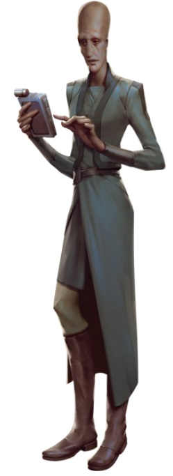

Muun
muun
Special Abilities: Muun begin the game with one rank in Knowledge (Education) and one rank in Knowledge (Core Worlds). They still may not train Knowledge (Education) or Knowledge (Core Worlds) above rank 2 during character creation.
Deep Pockets: Muun characters start the game with an additional 1,000 credits (they may not spend these credits during character creation).
Despite being an Outer Rim society, the Muun remain an important center in galactic politics; they started and maintain the InterGalactic Banking Clan (otherwise known as the Banking Clan or the IGBC) and stabilized the credit used from the deepest Core World all the way to the edge of the Outer Rim. While Muun culture as a whole is conservative and rigid, the personal beliefs of individual Muun vary wildly, especially among those who travel the galaxy and mingle with other species. The Muun feel the same passions as any other species when facing moral and ethical decisions, fighting for survival, or being influenced by the Force.
The humanoid Muun stand nearly two meters tall on average. Compared to humans, they have elongated heads and a slim build, giving them a gaunt look. Their skin tone falls on the paler end of the spectrum, usually appearing white, pink, or gray. Their features—a small nose, mouth, and ears—are subtle. Due to their three-heart circulatory system, the Muun have a robust constitution and can often live about a century.
Whether gained through natural ability or cultural influence, the Muun pride themselves on their advanced mathematical skills. Their children boast mathematical capabilities that rival those of university students on other worlds. Possessing a strong grounding in mathematics, logic, and science, the Muun have a reputation for intelligence and rationality. However, their history shows that they have some their own harmful and dangerous biases, rooted in their pride and ego.
The traditionalist and conservative Muun believe their society a meritocracy in which the intelligent rise up through the ranks. Muun culture praises business and economics as the most intellectual and practical of pursuits. Those who don’t join the IGBC usually start their own corporation. Nevertheless, since the Banking Clan is such a massive and pervasive entity, it is difficult to know where it begins and where Muun society ends.
The InterGalactic Banking Clan, and thus the Muun people, remained neutral in galactic politics throughout the Republic era to keep the economy stable. Muun internal politics tend to be similarly neutral and supportive of the status quo. This attitude has trickled down to individual Muun, who consider neutrality the highest form of political practice. In fact, most Muun believe they shouldn’t concern themselves with the Galactic Civil War, an apathy that the Empire encourages. However, this conflict differs from others in that the Empire now controls the IGBC.
On the other hand, Imperial control over the Banking Clan and the soft occupation of Muun worlds have caused an increase in radicalized Muun, who reject the ideal of neutrality as a societal default. This new militancy is tempered by their conservative background. Rather than participate in outright violence or public protests, these budding activists engage in economic and corporate crimes, such as embezzlement and speculation, to siphon funds from Imperial accounts and disrupt Imperial businesses on Scipio. A few take these funds to fill Rebel treasuries, knowing that if the Rebellion succeeds, the Muun can become truly independent again. These brave few face myriad challenges: their peers’ conservatism, their own doubts over their intuition and emotions about their homeworld, and the Empire’s consistent message that a strong Muun is a compliant Muun.
The Muun originated from the icy planet of Scipio in the Albarrio sector. Though it had powerful geothermal energy, the planet offered little in the way of natural resources. Another planet the Muun colonized, which they named Muunilinst, was more temperate with rich mineral deposits. Drawing on Muunilint's abundant resources, the Muun were able to spread outwards into the galaxy. It wasn't new resources that rocketed them literally and figuratively into galactic politics, however. Instead, it was their establishment of the common credit—soon to become the standard currency for the galaxy—and the InterCalactic Banking Clan.
The rise of the ICBC on Scipio, and especially the laws the Muun put in place to keep its transactions as secretive as possible, have made that world a hotbed of power and intrigue. Hosts of outside agencies, power brokers, "respectable" representatives ofcrime cartels, and others reside here along with the native Muun, all endlessly plotting and dealing to better their economic interests. The Empire's powerful presence here watches over the flow of credits, working to ensure none are directed towards disloyal factions.
All of this has transformed Scipio from a desolate ball of ice into a world filled with spectacular structures to house all of these players and their support personnel. Graceful arches and towering columns mix with stone cliffs and ice pillars to create wondrous vistas. The main vault of the IGBC itself is one of the most impressive architectural edifices in the region, but like everything else on Scipio it is the credits within that make the greatest impression.
The Muun rarely use their own language with outsiders, despite their insistence that the vocabulary and grammar possesses perfect mathematical clarity. One of the few intelligently constructed languages in the galaxy (as opposed to organically formed), Muun uses tones that make some species disparagingly call it an offshoot of Binary. The language’s creators designed it to evolve by establishing new compound words instead of adopting loan words from other languages. This feature might be due to egocentric preference rather than any claim to logic, as some newer words end up dozens of syllables long.
Muun traditional education teaches Basic less as a courtesy to other races and more as a practicality, since Muun deal with species from across the galaxy. Rather than learn additional languages, most Muun simply utilize protocol droids. Muun who travel widely may learn more due to circumstance, as a protocol droid might not always be nearby to hire or purchase.
It may appear to outsiders that the greedy, self-serving Muun would be unlikely to have a connection to the Force. Darth Plagueis, a Muun, is irrefutable evidence to the contrary. In addition, one Muun contingent has a philosophical perspective on commerce, seeing it as being less about the accumulation of money and more about how sentients communicate. Economies function in cycles, just as living beings do. The Empire rose like any other government and is doomed to fall eventually, like a living organism. To these Muun, the galaxy is alive, and money is its sinew. But what is the lifeblood of the galaxy? What is the purpose of commerce? Can it be used to improve all lives in the galaxy, not just Muun lives? In seeking the answers to these questions, Muun economic philosophers find themselves close to understanding the Force.
By the time the Republic and then the Empire established control over the InterGalactic Banking Clan, the Muun government and ICBC administration were essentially one and the same. The Empire kept the basic structure of the IGBC intact, as it was concerned about the galactic economy crashing. For the rest of the known galaxy, the credit remained the credit.
But for Muun, the Empire now owned their society and culture, Just as a board of investors owns a corporation. Even as the Muun went on with their day-to-day lives, they knew that their world, government, and institutions no longer had full autonomy. What happens to a people when they discover their culture, their rights, and their freedoms can be bought and sold?
Only a few Muun in high administrative positions know that cells from Imperial Intelligence have installed themselves in the Banking Clan as observers. But some suspect them of performing socio-economic experiments. Muun economic theorists have seen strange market fluctuations that appear to have direction and purpose. They can only be explained by intelligent and purposeful manipulations of local markets. But to what end?
If true, then the knowledge gained from these experiments could be used to influence credit, supply, and demand levels, which in turn would influence behavior as people adjusted to those levels. Could the Empire be testing how quickly it can change a society? If the Empire can change societies at will, then the Muun are truly not independent. If so, what other changes have the Muun suffered without realizing? How has their culture been altered these past two decades?